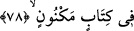
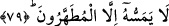

kerîmine, kerem sâhibi melekler aracılığı ile ve sonsuz ikrâm ve ihsân sâhibi Allah
katından inmiştir.
78. Korunmuş bir kitapta bulunmaktadır.
Mukarrebûn meleklerin dışında diğerlerine karşı korunmuştur. Yâni o belli meleklerin
dışında hiç kimse Levh-i Mahfuz’dan ibâret olan o Kitab’a ulaşamaz; onun hakkında
gerçek yönüyle bilgi sahibi olamaz.
79. Ona ancak temizlenenler dokunabilir.
Bu âyet-i kerîme ya Kitab’ın diğer bir sıfatıdır. Bu takdirde âyette geçen mutahherun
kelimesinden maksad, cismanî her türlü bulanıklıkdan ve günah kirlerinden berî olan
meleklerdir. Yahut Kur’ân’ın sıfatıdır. Bu takdirde ise, mutahharûn/temizlenenlerden
maksad, mutlak mânâda hadesden temizlenenler, yâni abdesti ve boy abdesti olanlardır.
Böyle olunca ayet, zâhiren olumsuzluk ifâde etse burada bir nehy/yasaklama var
demektir. Yâni abdestsizlik ve cünüplük gibi her türlü kirlerden temiz olanların dışında
kimsenin Kur’ân’a dokunmaması gerekir. Şu hadis-i şerif bu yolda bir örnektir.
“Müslüman müslümanın kardeşidir, ona zulm etmez ve zâlime teslim etmez.”[227] Yâni
ona zulmetmemesi ve onu zulmedecek kimseye teslim etmemesi gerekir. Dolayısıyla
hadisin: “Ona zulmetmesin ve zulmedecek kimselere onu teslim etmesin” şeklinde
anlaşılması lazımdır. Buna göre Kur’an’dan maksad Mushaf’tır. Onu insanlara
yakınlaştırmak üzere mecâzî bir anlamla Kur’an diye isimlendirmiştir. Nitekim
Peygamberimiz (s.a.), Kur’an ile düşman topraklarına yolculuk yapılmasını
yasaklamıştır.[228] Buradaki Kur’an ile Mushaf murad edilmiştir.
Fıkıh ilmine göre, abdestsiz bir kimsenin, kendisine yapışık kılıfı ve benzeri bir şey
olmadan Kur’ân’a dukunması câiz değildir. Kur’an’dan ayrı olan kılıfına dokunmak,
gerçekten ona dokunmak sayılmaz. Ancak Kur’ân’ın bitişik kabına dokunmak böyle
değildir. Bu bitişik kab, Mushaf’ın şirâzesiyle birlikte ona bağlanmış deridir. Bu deri
Kur’an’dan sayılır ve ona tâbidir. Ayrıca söylenmesine gerek duyulmaksızın Kur’ân’ın
satışına dahildir. Bu görüş, Kur’ân’a saygı göstermek bakımından gerçeğe daha
yakındır.
Mushafa kolun yeni ile dokunmak mekruhtur. Çünkü yen, elbiseyi taşıyana tâbi sayılır
ve kişi ile Kur’an arasında engel sayılmaz. Bu nedenle toprağa oturmamak üzere yemin
eden kimse kendisiyle yer arasında eteği bulunduğu halde yere oturursa yeminini